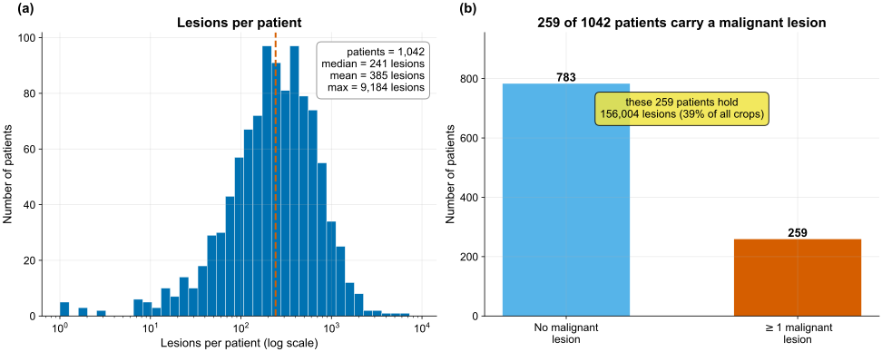
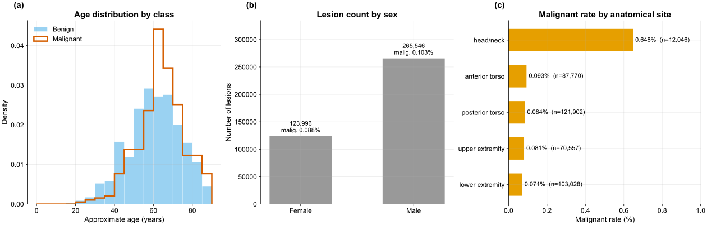
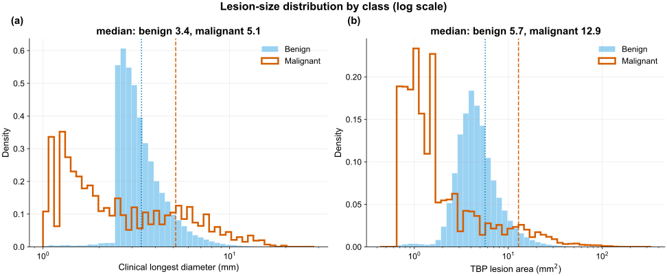
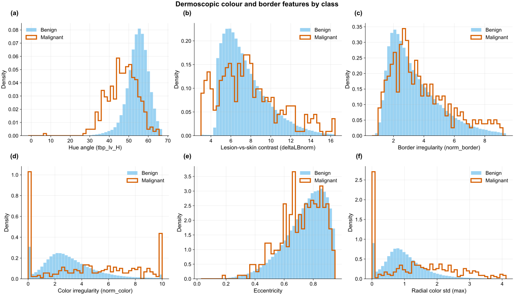
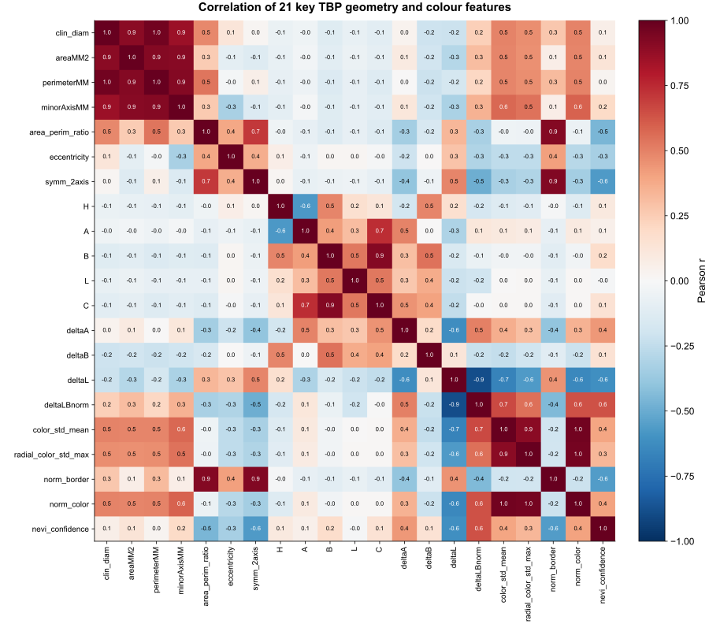
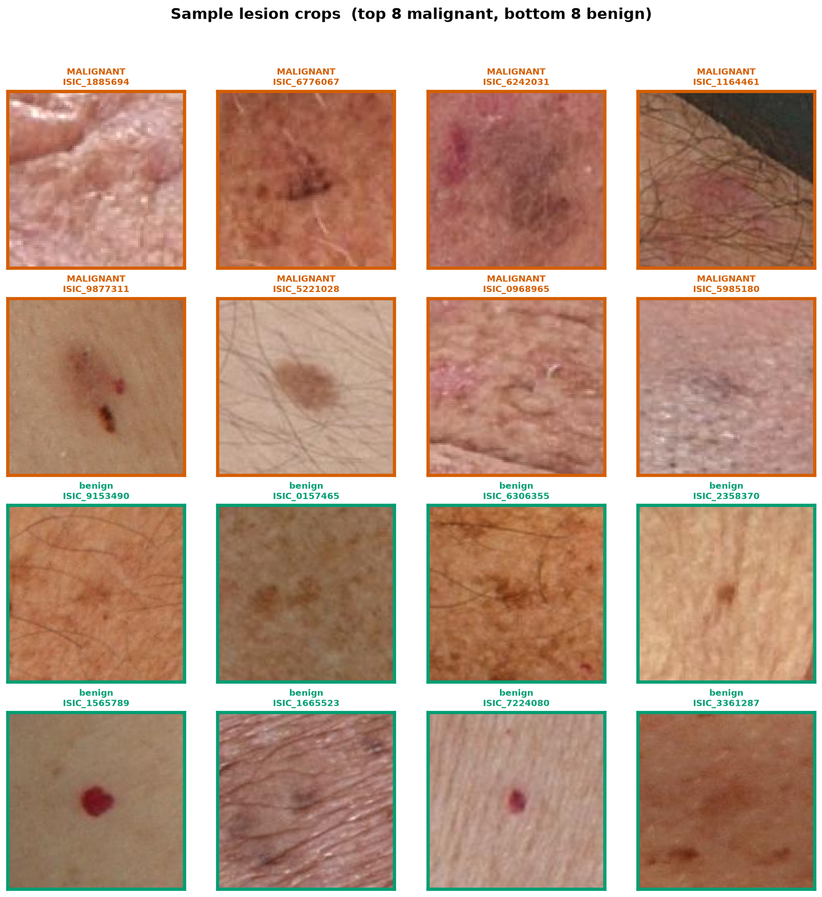

Data & Exploratory Analysis
The SLICE-3D dataset, the class imbalance, and the exploratory figures
The problem
The task is automated triage of skin-lesion crops extracted from 3D total-body photography (TBP): each crop must be classified as malignant or benign so that high-risk lesions are flagged for clinical review. The clinical objective is high sensitivity — catching nearly every malignancy — at an acceptable false-positive rate.
The dataset
ISIC-2024 SLICE-3D is a corpus of lesion crops from TBP, which images every visible mole on a patient in a single capture. Each row is one lesion: a small square JPEG crop plus a tabular record of measurements computed by the TBP vendor’s software (geometry, color, 3D position) and clinical context (age, sex, body site).
| Fact | Value |
|---|---|
| Lesion crops (rows) | 401,059 |
| Malignant lesions | 393 |
| Benign lesions | 400,666 |
| Prevalence | 0.098% — about 1 malignant per 1,021 crops |
| Unique patients | 1,042 |
| Patients with ≥1 malignant lesion | 259 (24.9%) |
| Columns | 55 (35 float, 18 string, 2 int) |
| Real (non-leak) feature columns | 36 |
| Imaging | every crop is a TBP tile (TBP tile: close-up); 2 subtypes (3D: XP, 3D: white) |
| Source institutions | 7 (MSKCC, Hospital Clínic Barcelona, Univ. Basel, Frazer Institute/UQ, ACEMID MIA, MedUni Vienna, Univ. Athens) |
Data are patient-grouped: a patient contributes many correlated lesions, so the unit of independence is the patient, not the crop.
Representative crops

- Extreme class imbalance. At 0.098% prevalence, a constant “benign” predictor is 99.9% accurate and clinically useless. With only 393 positives, fold variance and leakage dominate model choice.
- The official metric. Scoring uses partial AUC above 80% TPR (pAUC@80), the area under the ROC restricted to the high-sensitivity tail — see Methods → The metric. Accuracy and plain AUC are unsuitable.
- No external, no synthetic. Only SLICE-3D is permitted; no external dermoscopy archives and no generative/synthetic positives. ImageNet-pretrained weights are allowed; external training data is not.
- Efficiency is a first-class axis. Every reported model logs parameters, FLOPs, and single-thread CPU latency alongside pAUC; a model is retained only if it earns its cost.
Image details
The crops are variable-size square JPEGs, 61–239 px on a side (median/mean ≈ 131/133 px), ~2.8 KB each. Two consequences for the image experts:
- 128 px ≈ native median. Training at 128 px is near the crops’ natural resolution; epochs are cheap and no detail is discarded.
- 224 px upsamples. The 224 px model receives the same lesion interpolated larger, not extra pixels. The measured 224 px gain (0.15311 → 0.15821) is therefore a capacity / training-dynamics effect — larger receptive field, more effective augmentation — not added image detail. Resolution is treated as a frontier axis, so both points are retained.
Missingness
Three real feature columns have missing values; all others are complete.
| Column | Missing |
|---|---|
sex |
2.87% |
anatom_site_general |
1.44% |
age_approx |
0.70% |
Several columns exist only in the training split and encode the answer or post-biopsy pathology. They are used for EDA framing only and dropped before training:
iddx_full, iddx_1 … iddx_5 (iddx_1 is Benign / Malignant / Indeterminate), mel_mitotic_index, mel_thick_mm, lesion_id, and tbp_lv_dnn_lesion_confidence (a vendor model’s confidence — unavailable at inference and effectively a label proxy).
Exploratory figures
All figures are generated by reports/eda/make_eda.py (read-only on data/, SEED = 42, Okabe-Ito colorblind-safe palette).
Fig 1 — Class imbalance & fold stratification

400,666 benign vs 393 malignant (0.098% prevalence). The five patient-grouped CV folds each hold 77–83 positives (~0.096–0.103% prevalence per fold); stratification is tight and no fold is starved of signal, a precondition for trustworthy OOF estimates.
Fig 2 — Patient structure

1,042 patients with a heavily right-skewed lesion count (median 241, max 9,184). The 259 patients carrying at least one malignant lesion hold 89% of all crops. Because a patient’s lesions are correlated, splits must be patient-grouped: any patient straddling folds leaks information.
Fig 3 — Demographics

Malignant lesions skew older (peak ~60–75), males contribute most crops, and head/neck stands out:
| Body site | n | Malignant rate |
|---|---|---|
| head/neck | 12,046 | 0.648% |
| anterior torso | 87,770 | 0.093% |
| posterior torso | 121,902 | 0.084% |
| upper extremity | 70,557 | 0.081% |
| lower extremity | 103,028 | 0.071% |
Head/neck carries ~7× the baseline malignant rate of any other site despite being the smallest site — a strong site prior.
Fig 4 — Lesion size

On both clinical longest diameter and TBP area, the malignant distribution is shifted ~2× larger than benign. Raw lesion size is a strong, cheap univariate signal; its patient-relative version is stronger (see Ablations).
Fig 5 — Color & border signals

Hue angle (tbp_lv_H) separates the classes most cleanly — univariate AUC 0.81 on a single feature. Lesion-skin contrast, border/color irregularity, and eccentricity shift toward higher values for malignant lesions, indicating independent color/geometry signal.
Fig 6 — Correlation of key TBP features

The core features form tight blocks (a size group: diameter / area / perimeter / minor-axis; a color group: A / B / ΔA / ΔB). The GBDT therefore sees substantial redundancy; a small number of axes capture most of the variance.
Fig 7 — Sample lesion crops

Malignant lesions tend to be larger, darker, and more color-varied, but visual overlap with benign is large. The overlap motivates a learned image expert on top of the tabular features and explains why the image expert alone (0.15821) does not exceed the tabular expert (0.16890).
Fig 8 — Image-embedding class separation

A t-SNE of the small CNN’s OOF embeddings (all 393 positives + 3,000 random negatives): the malignant points concentrate into a recognizable region of feature space. A small CNN learns a malignancy-relevant representation, supporting the use of its OOF probability as a stacked GBDT feature.
Fig 9 — Ugly-duckling illustration

For three patients with one malignant lesion among many benign ones, the malignant lesion sits at the top of its own patient’s size distribution (98th–100th percentile) — the concrete basis for the within-patient deviation features.
- 392 of 393 malignant lesions belong to a patient who also has benign lesions, so almost every positive can be judged against that patient’s own normal moles.
- On
clin_size_long_diam_mm, the malignant lesion sits at a median 88th within-patient percentile; 45.7% of malignant lesions fall in the top 10% of their own patient’s lesion sizes.
This is the quantitative basis for the engineered patient-relative features.
Summary of findings
- Imbalance defines the task. 0.098% prevalence motivates partial-AUC-above-80%-TPR scoring and mandatory patient-grouped, target-stratified CV. The folds hold 77–83 positives each with no patient straddling folds.
- Tabular signal is strong and cheap. Hue
tbp_lv_Hreaches univariate AUC 0.81, and lesion size shows a clean ~2× malignant shift — the evidence base for the LightGBM-first architecture. - The ugly-duckling sign is quantitatively present and is the dominant signal in the trained model (~65% of GBDT gain; see Results).
- The small CNN adds an orthogonal axis. Its embeddings cluster the positives despite heavy visual overlap in raw crops, justifying a stacked image OOF probability; head/neck’s ~7× elevated rate provides a site prior.
Continue to Methods →